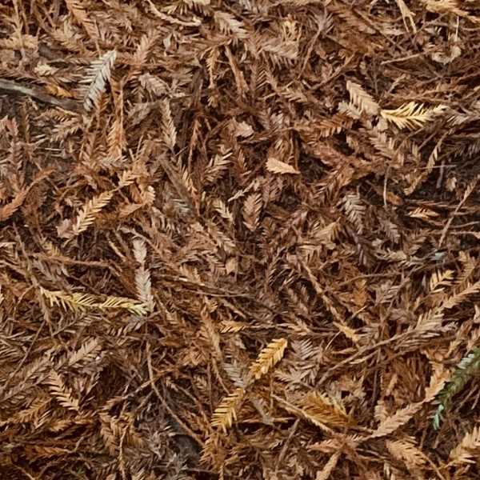
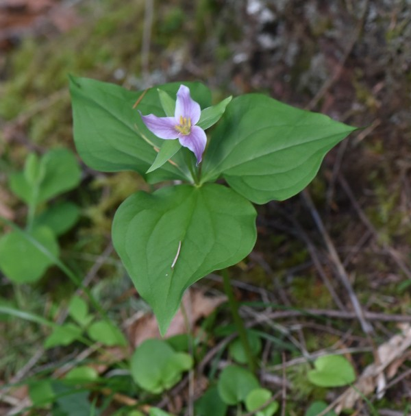

Key to Common California Plant Families
Based on the book
California Plant Families
which covers the most often encountered 70 plant families (around
85% of plants) of the 173 families in California west of the Sierran
Crest and Deserts.
a1 Seed-bearing plants with seed cones
or flowers, go to
a2
a1' Spore-bearing plants without seeds
Pteridaceae (brake fern family)


CONIFERS (PINE, CYPRESS, YEW, AND REDWOOD FAMILIES)
b1 Shrubs with jointed green twigs and
leaves reduced to scales
Ephedraceae (joint-fir family)

b1' Trees (one species a needle-bearing
shrub) without these features, go to
b2
b2 Mature leaves needlelike, go to
b3
b2' Mature leaves scalelike (if
needlelike, borne in pairs or whorls).
Cupressaceae (cypress family)

b3 Needles shed with twigs
Taxodiaceae (redwood or bald cypress family)

b4 Trees monoecious; seed cones papery
or woody
Pinaceae (pine family)
b4' Trees dioecious; seed cones fleshy
Taxaceae (yew family)
MONOCOTS AND PRIMITIVE DICOTS (SEVERAL DIFFERENT FAMILIES)
c3 Leaves simple, strongly aromatic
Lauraceae (laurel family)

c4 Shrubs or ground covers; leaves
compound
Berberidaceae (barberry family)
c4' Single-trunked trees; leaves deeply
palmately lobed
Arecaceae (palm family)
c5 Single flower borne just above the
leaf whorl
Liliaceae, genus Trillium

c5' Flower(s) not arranged like this;
leaves are not whorled, go to
c6
c6 Leaves simple
Polygonaceae (buckwheat family)

c6' Leaves compound
Berberidaceae (barberry family)
c7 Grasslike plants with small, mostly
greenish or brownish flowers, go to
c8
c7' Plants not both grasslike and with
small, greenish flowers, go to
c9
c8 Perianth obvious (use hand lens)
Juncaceae (rush family)
c8' Perianth clearly missing or highly
modified and thus not obvious, go to
c9
c9 Stems solid, often three-sided;
leaves channeled
Cyperaceae (sedge family)
c9' Stems usually hollow, usually round;
leaves seldom channeled
Poaceae (grass family)
c10 Flowers irregular; lower petal
enlarged into a lip
Orchidaceae (orchid family)
c10' Flowers regular or nearly so; no
obvious lip, go to
c11
c11 Leaves sword-shaped and equitant;
flower buds protected inside pairs of bracts
Iridaceae (iris family)
c11' Leaves seldom sword-shaped and
equitant; flower buds not enclosed inside pairs of bracts, go to
c12
c12 Leaves with strong, tough fibers;
flowers usually in very large inflorescences several feet long
Agavaceae (agave family)
c12' Leaves not strongly fibrous;
flowers not in uncommonly large inflorescences, go to
c13
c13 Flowers arranged in bracted umbels,
go to
c14
c13' Flowers arranged in some other way
Liliaceae (lily family)
c14 Leaves strongly onion-scented;
tepals seldom joined to form a tube.
Alliaceae (onion family)
c14' Leaves not onion-scented; tepals
usually joined to form a tube
Themidaceae (brodiaea family)
MOST DICOTS (THE BULK OF THE FLOWERING FAMILIES)
d2 Flowers in dense heads surrounded by
sepal-like bracts
Asteraceae (ragweed subtribe of composite or daisy family)
d2' Flowers not in dense heads as above,
go to
d3
d3 Leaves usually covered with dense
hairs or mealy scales, go to
d4
d3' Leaves not like this, go to
d5
d4 Ovary not strongly lobed; style one
Chenopodiaceae (goosefoot family)
d4' Ovary strongly three-lobed; styles
three
Euphorbiaceae (spurge family)
d7 Fruits a double-winged samara
Aceraceae (Acer negundo, maple family)
d7' Fruits a single-winged samara
Oleaceae (olive family; Fraxinus spp.)
d8 Leaves deeply palmately lobed
Platanaceae (plane tree family)
d8' Leaves not palmately lobed, go to
d9
d9 Leaves thin and deciduous, go to
d10
d9' Leaves tough and evergreen
Fagaceae (oak family)
d10 Male flowers in catkins, go to
d11
d10' Male flowers not in catkins, or
flowers bisexual
Rhamnaceae (buckthorn family)
d11 Leaves lobed; fruit an acorn in a
scaly cup
Fagaceae (oak family)
d11' Leaves not lobed; fruits not
acorns, go to
d12
d12 Seeds hairless and fruits are tiny
winged achenes or nuts; plants monoecious
Betulaceae (birch family)
d12' Seeds with dense hairs and borne in
capsules; plants dioecious
Salicaceae (willow family)
d13 Leaves have stipules; flowers have a
hypanthium
Rosaceae (rose family)
d13' Leaves lack stipules; flowers lack
a hypanthium
Ranunculaceae (buttercup family)
d14 Flowers neither sweetpealike nor
daisylike, go to
d15
d14' Flowers in daisylike heads
resembling single flowers.
Asteraceae (daisy or sunflower family)
d14" Flowers sweetpealike
Fabaceae (pea family)
d15 “Petals" actually colorful
nectar-secreting glands surrounding a cup of minute flowers
Euphorbiaceae (spurge family)
d15' True petals present, go to
d16
d18 Stems fleshy and spiny; flowers with
multiple petals
Cactaceae (cactus family)
d18' Stems not fleshy; flowers with a
single row of petals, go to
d19
d19 Flowers with a hypanthium; leaves
seldom fragrant
Rosaceae (rose family)
d19' Flowers lack a hypanthium; leaves
sometimes fragrant, go to
d20
d20 Shrubs or trees with highly fragrant
leaves
Myrtaceae (myrtle family)
d20' Herbaceous or subwoody plants;
leaves not fragrant, go to
d21
d21 Leaves fleshy; petals often numerous
Aizoaceae (iceplant family)
d21' Leaves not fleshy; petals
d10 or fewer
Loasaceae (blazing star family)
d22 Stamens separate, go to
d23
d22' Stamens fused to form a hollow tube
Malvaceae (mallow family)
d23 Flowers have a hypanthium (look
carefully; hypanthium may be small).
Rosaceae (rose family)
d23' Flowers lack a hypanthium, go to
d24
d24 Several to many separate pistils
Ranunculaceae (buttercup family)
d24' A single compound pistil
Papaveraceae (poppy family)
d26 Flowers in umbels of umbels or
umbels of heads
Apiaceae (parsley family)
d26' Flowers in other arrangements, go
to
d27
d28 Vines with tendrils; flowers
unisexual
Cucurbitaceae (cucumber or squash family)
d28' Self-supporting plants with milky
sap; flowers mostly bisexual.
Campanulaceae (bellflower family)
d30 Ovary not truly inferior; enclosed
in a saclike hypanthium
Nyctaginaceae (four o’clock family)
d30' Ovary truly inferior, go to
d31
d31 Flowers usually have a hypanthium
developed above the ovary
Onagraceae (evening-primrose family)
d31' Flowers lack a hypanthium
Rubiaceae (madder family)
d32 Sepals and petals both colored;
hypanthium present
Grossulariaceae (gooseberry family)
d32' Sepals greenish, often
inconspicuous; hypanthium missing, go to
d33
d33 Leaves have stipules (look closely)
Rubiaceae (madder family; Cephalanthus occidentalis)
d33' Leaves lack stipules, go to
d34
d34 Petals four; flowers in cymes or
heads
Cornaceae (dogwood family)
d34' Petals five; flowers in varied
arrangements, go to
d35
d35 Leaves opposite
Caprifoliaceae (honeysuckle family)
d35' Leaves alternate
Ericaceae (heather family)
d36 Petals separate, not joined, go to
d37
d36' Petals partly joined, falling
together as a unit, go to
d66
d39 Leaves often ill-smelling; flowers
with six stamens
Capparaceae (caper family)
d39' Leaves not ill-smelling; flowers
with five stamens
Violaceae (violet family)
d40 Trees with palmately compound leaves
Hippocastanaceae (horse-chestnut family)
d40' Shrubs with simple or compound
leaves, go to
d41
d41 Ovary with beaklike styles,
five-chambered.
Geraniaceae (geranium family, genus Pelargonium)
d41' Ovary lacks beaklike styles and is
one- or two-chambered, go to
d42
d42 Stamens five or d10; fruit a
one-chambered legume
Fabaceae (pea family)
d42' Stamens six; fruit not a legume, go
to
d43
d43 Leaves palmately divided or compound
Capparaceae (caper family)
d43' Leaves not palmate
Brassicaceae (mustard family)
d44 Herbaceous plants, go to
d45
d44' Woody, spineless plants, go to
d61
d44" Woody, spiny plants
Rhamnaceae (buckthorn family)
d46 One pistil per flower; two (usually)
or four sepals, go to
d47
d46' Five separate or only partly joined
pistils; five sepals
Crassulaceae (stonecrop family)
d47 Usually two sepals (sometimes an
indefinite number) and a single compound pistil
Portulacaceae (portulaca family)
d47' Four sepals and four petals
Brassicaceae (mustard family)
d49 Flowers have a hypanthium;
sepal-like bracts alternate with sepals.
Rosaceae (rose family)
d49' Flowers lack a hypanthium;
sepal-like bracts missing, go to
d50
d50 Woody plants with strongly scented
leaves
Rutaceae (rue family; Ptelea crenulata)
d50' Herbaceous plants with unscented to
lightly scented leaves, go to
d51
d51 Petals and sepals four; styles not
forming a beak, go to
d52
d51' Petals and sepals five; styles
forming a beak
Geraniaceae (geranium family)
d52 Leaves palmately divided or compound
Capparaceae (caper family)
d52' Leaves not palmate
Brassicaceae (mustard family)
d53 Ovaries look inferior because they
form a bulge inside the hypanthium
Nyctaginaceae (four o’clock family)
d53' Ovaries look superior, go to
d54
d54 Leaves opposite
Caryophyllaceae (pink family)
d54' Leaves generally alternate or
basal, go to
d55
d56 Stipules form papery sheaths; styles
are not beaked
Polygonaceae (buckwheat family)
d56' Stipules are green and not
sheathing; styles form a beak
Geraniaceae (geranium family)
d57 No distinction between sepals and
petals
Polygonaceae (buckwheat family)
d57' Sepals and petals are obviously
different, go to
d58
d58 Hypanthium present; often two
separate or partly joined pistils
Saxifragaceae (saxifrage family)
d58' Hypanthium is missing; one single
pistil, go to
d59
d59 Woody plants with highly aromatic
leaves
Rutaceae (rue family)
d59' Herbaceous plants with mostly
unscented leaves, go to
d60
d60 Four petals; four sepals
Brassicaceae (mustard family)
d60' Six petals and three sepals
Papaveraceae (poppy family)
d62 Leaves pinnately compound; fruit a
legume
Fabaceae (pea family)
d62' Leaves trifoliate; fruit a
berrylike drupe
Anacardiaceae (sumac family)
d64 Leaves palmately lobed; fruits are
double-winged samaras
Aceraceae (maple family)
d64' Leaves not lobed; fruit is a
capsule
Rhamnaceae (buckthorn family)
d65 Sepals colored; ovary
three-chambered
Rhamnaceae (buckthorn family)
d65' Sepals green; ovary not
three-chambered
Anacardiaceae (sumac family)
d68 Two ovaries per flower; many seeds
per ovary
Apocynaceae (dogbane family)
d68' One ovary per flower; few seeds per
ovary
Convolvulaceae (morning glory family)
d69 Flowers arranged mostly in coiled
clusters that unfurl as flowers open, go to
d70
d69' Flowers not arranged this way, go
to
d71
d70 Style single, not divided; ovary
four-lobed
Boraginaceae (borage or forget-me-not family)
d70' Style usually partway split in two;
ovary two-chambered
Hydrophyllaceae (waterleaf family)
d72 Stamens two per flower
Oleaceae (olive family)
d73 Petals not pleated in bud; stamens
attached to a disc
Ericaceae (heather family)
d73' Petals pleated in bud; stamens
attached to petals
Solanaceae (nightshade family)
d74 Three stigma lobes and a
three-chambered ovary
Polemoniaceae (phlox family)
d74' One or two stigma lobes and a one-,
two-, or five-chambered ovary, go to
d75
d76 Petals often bear appendages; ovary
is incompletely two-chambered
Gentianaceae (gentian family)
d76' Petals lack appendages; ovary is
two- or five-chambered
Solanaceae (nightshade family)
d77 Stamens line up opposite petals;
seeds borne on a central stalk inside the ovary
Primulaceae (primrose family)
d77' Stamens line up alternating with
petals; seeds are not on a central stalk, go to
d78
d78 Styles usually two-forked
Hydrophyllaceae (waterleaf family)
d78' Styles single, not forked
Scrophulariaceae (figwort family, genus Verbascum)
d79 Leaves often scented; ovary divided
into four lobes, go to
d80
d79' Leaves seldom scented; ovary partly
or fully two-chambered
Scrophulariaceae (figwort family)
d80 Leaves not mint- or sage-scented;
flowers slightly irregular
Verbenaceae (verbena family)
d80' Leaves (usually) strongly mint- or
sage-scented; flowers (mostly) two-lipped
Lamiaceae (mint family)